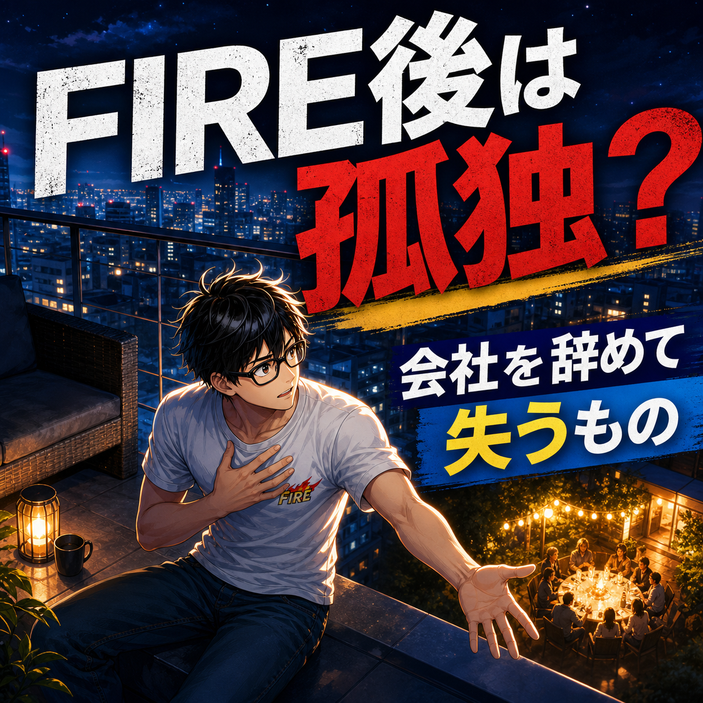

FIRE COLUMN
FIRE後は孤独になりやすい？会社を辞めると失いやすいもの

.png) RELATED ARTICLE
20人以上が続けてくれたFIREコミュニティで、運営して分かったこと
オンラインコミュニティを始めた直後、無料募集に数日で約150人が集まりました。数字だけ見れば大成功です。しかし、運営してみると、参加人数が多いことと、安心して話せる場所であることは別だと分かりました。
wakuwaku-fire-git.pages.dev ↗
RELATED ARTICLE
20人以上が続けてくれたFIREコミュニティで、運営して分かったこと
オンラインコミュニティを始めた直後、無料募集に数日で約150人が集まりました。数字だけ見れば大成功です。しかし、運営してみると、参加人数が多いことと、安心して話せる場所であることは別だと分かりました。
wakuwaku-fire-git.pages.dev ↗
 COMMUNITY
FIREを本音で話せる場所
ワクワクFIRE道。FIREや自由な人生を目指す人が交流できるコミュニティ。
community.camp-fire.jp ↗
COMMUNITY
FIREを本音で話せる場所
ワクワクFIRE道。FIREや自由な人生を目指す人が交流できるコミュニティ。
community.camp-fire.jp ↗
FIRE後は孤独になりやすいのか。会社を辞めたあとに減った会話や役割、そこからコミュニティや家族との時間へ接点を作り直した経験をもとに、孤独と一人時間の違いを考えます。
まいど！ワクワクFIREのまるです。
FIREしたら孤独になるんやろか。
会社へ行かなくていい、人間関係のストレスから離れられる。これはFIREの大きな魅力です。けど、会社を辞めると、給料だけでなく、自然な会話、役割、生活リズムまで一緒に消えることがあります。
僕はFIRE直後、ゲーム中心の生活になり、人と話す機会が減りました。一人でいられる自由はあったのに、誰かと笑ったり、悩みを話したりする場が少ない。これが孤独の入口やったんやと思います。
一人でいることと、孤独は別もの
一人の時間が好きな人はたくさんいます。誰にも予定を合わせず、好きな場所で好きなことをする。FIRE後に一人の時間が増えること自体は、悪いことではありません。
孤独は、人数の問題だけではない。話したい時に話せる相手がいない、自分の存在がどこにも接続していない、という感覚に近いです。家の中に一人でいても満足している日もあれば、人に囲まれていても孤独な日もある。
FIREを目指すなら、どれくらい一人で過ごしたいのかと、どんな接点が必要なのかを分けて考えると、計画が現実的になります。
会社は、知らないうちに会話を提供していた
会社員時代は、仕事の話をしながら雑談もする。昼休みにご飯を食べる。何気ない一言に返事をする。全部が楽しいわけではないけれど、会話の回数は自然に確保されていました。
FIREすると、その自然発生する会話がなくなる。自分から連絡しないと、誰とも話さない日が普通に出てくる。僕は後に、コミュニティの通話やオンライン飲み会を通じて、会話の筋肉が落ちていたことに気づきました。
人と会うのが苦手だからFIREした人もいるでしょう。無理に大人数へ入る必要はありません。でも、完全に接点を断つと、自分が思っている以上に心身へ影響が出ることはあります。
僕がコミュニティを作った理由
FIRE後、会社とは別の居場所が欲しいと思い、ワクワクFIREのコミュニティを作りました。最初から完璧な理念があったわけではない。FIREや自由な生き方について、気軽に話せる人が欲しかったんです。
オンラインで話す。勉強会をする。時にはオフ会をする。こうした予定があると、FIRE後の一日にも人との接点が生まれます。情報をもらうだけではなく、自分の考えを話し、誰かの悩みを聞く。これが生活の役割にもなりました。
人数が多ければ孤独が消えるわけではありません。長く話せる関係があるか、弱音を出しても大丈夫か。安心して参加できる濃さのほうが、僕には大切でした。
家族がいても、社会との接点は別に必要になる
家族と暮らしていれば孤独にならない、とも限りません。家族は大切ですが、夫婦と親子では話す内容も役割も違う。仕事や資産形成の悩みを、家族に全部背負わせる必要もない。
僕は妻が働き、自分が家事育児を担う日常を公開しています。子どもの送迎や食事は、生活に大きな意味をくれます。一方で、子どもが寝た後に友人と話したい日もある。家族、友人、コミュニティ。それぞれの接点には別の役割があります。
孤独を防ぐために、つながりを先に予定へ入れる
FIREしてから誰かと会おうと思っていると、予定は意外と入りません。働いている友人は平日の昼に会えないし、こちらから誘わなければ関係は自然に薄くなる。
週に一度、短い通話をする。月に一度、食事をする。趣味の集まりへ参加する。これくらいでいいので、先に予定を置く。相手に毎回濃い相談をする必要はなく、近況を話すだけでも接点は続きます。
人と会うのがしんどい時は、文章でやり取りする、散歩中に電話するなど、負担の少ない形から始める。ゼロか百かにしないことが大切です。
役割があると、孤独の感じ方が変わる
孤独を消すために、ずっと誰かと一緒にいる必要はありません。自分が誰かの役に立っている感覚があるだけで、日々の輪郭は変わります。
家事育児、文章を書く、動画を作る、コミュニティを運営する。収入になるかどうかは別として、役割には価値がある。僕は会社を辞めてから、何者でもないような焦りを感じた時期がありましたが、活動を作ることで少しずつ戻ってきました。
寂しさを、強がって隠さない
FIREしたのだから毎日楽しそうにしなければ、と無理に明るく振る舞う必要はありません。暇な日も、誰とも話さない日もある。そういう日を「失敗」と決めつけず、今日は寂しいなと認めるだけで、次の行動が選びやすくなります。
短い連絡を一つ送る、外へ出て人のいる場所を歩く、コミュニティの会話を読む。大きな社交性はいらないです。孤独を消すのではなく、孤独が長く居座らないように小さな扉を開けておく。これくらいの距離感が、僕にはちょうどよかったです。
孤独を恐れて、嫌な会社へ戻る必要はない
会社を辞めると孤独になる可能性はあります。でも、だからといって嫌な仕事を我慢し続けるしかないわけではない。
少し働く、地域の活動へ参加する、趣味の仲間を作る、オンラインでつながる。会社以外の接点はいくつもあります。FIRE後に働くことも、FIREをやめることも、失敗の烙印ではありません。自分に合う人との距離を探せばいい。
FIRE後の自由は、つながり方まで自分で選ぶこと
FIRE後に孤独を感じるのは、自由が間違いだからではありません。会社が自動で用意していた会話や役割を、自分で作り直す時期が必要なだけです。
一人の時間を守りながら、家族、友人、コミュニティ、活動の接点を少し置く。無理に明るくならなくていい。停滞感が拭えないなら人に会う。これを小さく繰り返す。
自由は人から離れるためだけにあるんやない。自分が選んだ人と、選んだ距離でつながるためにもある。FIRE後の居場所は、退職してから慌てて作るより、できればその前から育てておきたいです。